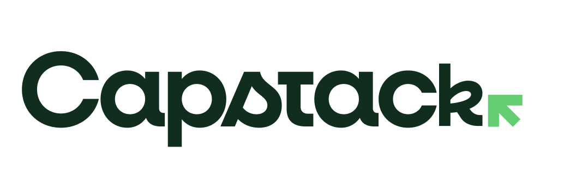

Your business, on file.
Every business has a paper trail. Capstack gives it a proper file: receipts go in, a stamped valuation comes out, and every tab is something you know about your business that you didn't have written down before. The witty broker, organised.
#042E1B
#93B99B
#CFC8C0
#F7F5EF
#D4ED6F
#25D366
#FF6A1A
paper → sage, in filed bands
deep → forest
The pop colour
Signal orange, used as punctuation: the full stop or question mark that ends a headline, the small "new" dot, and at most one urgent tab. Never underlines or swipes. One mark per screen.
Posters
The cover: outline folders behind one solid one, roman and italic in the same line. The index: a business's file as a stack of tabs, which is also how the product is organised.
Everything your business is worth, on file.

capstack.coOne business. Five files.
Website hero · the file is alive
A receipt drops into the file, then the stamped A4 report slides out. The photo is pinned inside like the first page. It loops gently; it holds still for people who turn off motion.
Your business, on file.
Answer a few plain questions, drop in your receipts if you have them, and get a stamped valuation with every reason written down.

Inside the product
Onboarding opens a new file, one question at a time, and prints your receipt as you go. The dashboard is the open file: a hole-punched page with the stamped value, mono notes in the margin, and the tabs sticking out of the right edge as the menu.
What your business is worth today
- Six years on the same street+₦4.4M
- Customers come back+₦3.1M
- One big timber supplier−₦1.2M
- Equipment loan−₦1.2M
How it works · four folders on a shelf
Process steps as spines, roman and italic, the way a broker's shelf would hold them.
What to react to
- Does "Your business, on file" feel like the witty, organised broker?
- The type: one sans in upright + italic (replacing Playfair), with a typewriter mono for tabs and labels.
- The palette: deeper and calmer (deep green, sage, file grey, paper), with lime and seal green kept as accents.
- The seal: "Valued · on file" with your arrow. Green on screen, blue ink on paper.
Photography still to come: a set of owners across sectors, pinned into their files like the craftsman here.